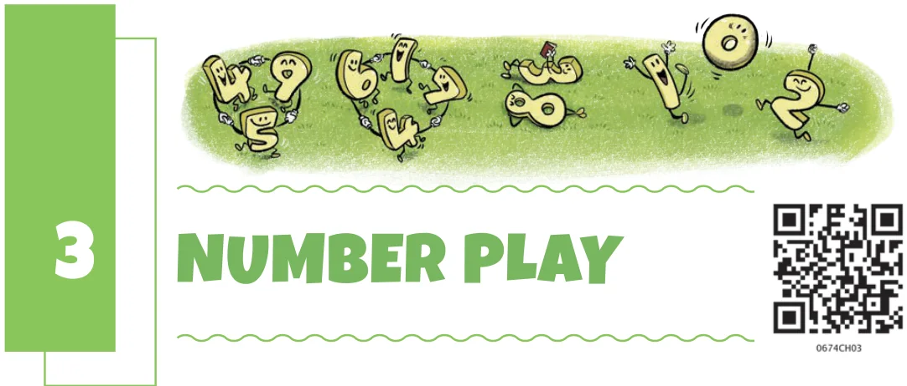
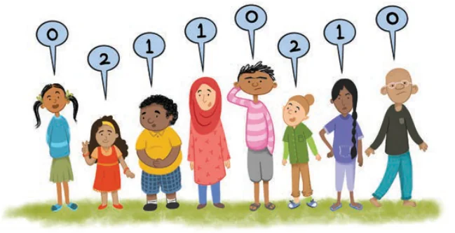
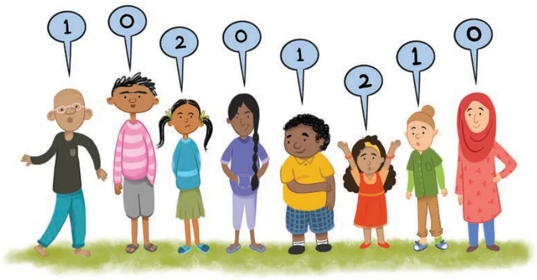
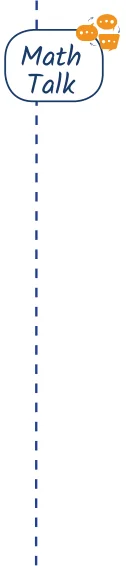

Numbers are used in different contexts and in many different ways to organise our lives. We have used numbers to count, and have applied the basic operations of addition, subtraction, multiplication and division on them, to solve problems related to our daily lives. In this chapter, we will continue this journey, by playing with numbers, seeing numbers around us, noticing patterns, and learning to use numbers and operations in new ways.
Think about various situations where we use numbers. List five different situations in which numbers are used. See what your classmates have listed, share, and discuss.
3.1 Numbers can Tell us Things
What are these numbers telling us?
Some children in a park are standing in a line. Each one says a number.

What do you think these numbers mean? The children now rearrange themselves, and again each one says a number based on the arrangement.

Did you figure out what these numbers represent?
Hint: Could their heights be playing a role?
A child says ‘1’ if there is only one taller child standing next to them. A child says ‘2’ if both the children standing next to them are taller. A child says ‘0’, if neither of the children standing next to them are taller. That is, each person says the number of taller neighbours they have.
Try answering the questions below and share your reasoning.

- Can the children rearrange themselves so that the children standing at the ends say ‘2’?
- Can we arrange the children in a line so that all would say only 0s?
- Can two children standing next to each other say the same number?
- There are 5 children in a group, all of different heights. Can they stand such that four of them say ‘1’ and the last one says ‘0’? Why or why not?
- For this group of 5 children, is the sequence 1, 1, 1, 1, 1 possible?
- Is the sequence 0, 1, 2, 1, 0 possible? Why or why not?
- How would you rearrange the five children so that the maximum number of children say ‘2’?